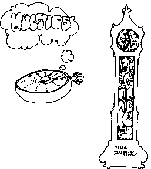

Purpose
The Multicians web site presents the story of the Multics operating system for people interested in the system's history, especially Multicians. The site's goals are to
- preserve the technical ideas and advances of Multics so others don't need to reinvent them.
- record the history of Multics, its builders, and its users before we all forget.
- give credit where it's due for important innovations.
- remember some good times and good people.
Contents
This website contains information about the history and features of the Multics operating system, including historical narratives and tables, an extensive bibliography, a list of contributors, a Multics Glossary, conference papers, articles, stories and humor, source code, internal documents, and pictures of Multicians and Multics machines.
The Multicians web site has benefited from the contributions of many authors. Contributions are invited: if you have a correction, fact, date, name, anecdote, or picture, please share it with Multicians everywhere by sending mail to the editor.
Tom Van Vleck is the editor of this site. A log of changes to the site is maintained: it lists 2216 updates since May 1995, when the site was first published.
- Design decisions, content rules, and implementation choices: Web Site Design
- Instructions for site maintenance tasks: Web Site Maintenance tasks
- Site build process and tools: Web Site Build process
- How to install the site tools: Maintainer tools for the multicians.org website
Categories
The 488 pages on multicians.org are organized into 6 categories. Each page's menus use the same structure and navigation elements.
| Home | Home page: introduction and overivew |
| History | Historical articles about Multics; Chronology, Glossary |
| People | List of Multicians, Multics Stories, Pictures, Memorabilia |
| Library | Bibliography, Books, Articles and Papers, Internal documents, System Source, Simulator |
| Sites | List of Multics installations, Site timeline, Site histories |
| About | Web site info, Changes, News, External links, Image gallery, Site map |
Hosting
The Multics Web pages are currently available on one site:
- https://multicians.org/
- Primary site: Pittsburgh, PA, USA (thanks to Tom Van Vleck)
Multicians may submit their mail addresses to a protected database, and a facility is provided to forward messages to those addresses without exposing them, for spam protection. To sign up, use the form at the top of multicians.html. To send mail to a Multician, look them up in multicians.html and click "MAIL".
RSS
An RSS feed describing the last 5 changes to the site is provided on the home page. Please do not read it every few minutes. It only changes a few times a month.
Site News
For news events concerning Multics see Multics News.
Feb 2024: Hacker News had a thread discussing "It Can Be Done" led to 344933 hits in one day. Site performance was fine.
Dec 2022: Moved the hosting of multicians.org to an all-SSD virtual private server, price about the same, better bandwidth limit.
Aug 2021: Problems with DNS at Pair Networks broke the site and bounced email on 08/17/21 for several hours. Appears to be fixed.
Dec 2019: Because Yahoo eliminated support for its "groups" service, we moved the multicians mailing list to groups.io. All members of the Yahoo group were added to the new group, and all photos and files saved. The message archive going back to 01/03/2015 was preserved. (Unfortunately, a few messages had files attached, and these did not transfer.)
Sep 2017: The Stratus mirror of the site is being taken down. Many thanks to Paul Green for providing it for over 22 years.
Nov 2012: Design refresh. See the Web Site Design page.
Aug 2012: A user in Michigan using wget generated 959,806 hits on the Multicians website in one day. (There are many fewer files than that on the site.) This event required the editor to do much work to recover. wget generated HEAD requests for many URLs pointing to the same file. I have disallowed URLs with multiple consecutive slashes. If you need a copy of the whole site for some reason, contact the editor and I can point you to a gzipped tar file.
Nov 2008: PlanetMirror has stopped mirroring the site. Many thanks to jason andrade.
Nov 2007: When the Multics source was released  at MIT, the Multicians website received over 300K hits in three days.
at MIT, the Multicians website received over 300K hits in three days.
March 2005: A spammer in Nigeria sent 38 "419" spam messages to Multicians using the mail form. One of these recipients complained to SpamCop, and so Pair Networks disabled the mail form until the editor could convince them we were not spammers. Restrictions on mail sending have been tightened to decrease the chance of a repeat.
Feb 2003: jason andrade has kindly offered to host an Australian mirror of the site at PlanetMirror.
Oct 2002: City University of London changed their policy and no longer hosts a mirror of multicians.org. Many thanks to Dave Vinograd for his support for over 7 years.
Jul 2002: The mailto links on the Multicians list page were replaced by a mail form, as an anti-spam measure.
Apr 2001: The primary Multics website moved from best.com to a new provider,  Pair Networks Inc. in Pittsburgh.
Pair Networks Inc. in Pittsburgh.
Nov 2000: The Multics website was mentioned in RISKS and Slashdot on the same day, 11/13/00, causing over 94K hits. This time, thanks to Larry Sherman at best.com, no limits were hit. Louis Pouzin's shell story was mentioned in Slashdot on 11/29/00, causing over 200K hits. Content was unavailable for four hours due to bandwidth limit. (The billing snafu that resulted from this event took four months and many hours to resolve, and led the site editor to find a new web hosting provider.)
We were "slashdotted" again on March 23, 2000, when an article was posted pointing to the "timing channels" story. This time we weren't so lucky: the Mountain View ISP's people bungled the request to extend our limits, and the site was unavailable for 26 hours. Over 250K people who wanted to read the story were turned away.
On March 7, 2000,  www.slashdot.org carried a story pointing users to Bob Mullen's story about the Multics scheduler.
The website logged over 100K hits in one day; we would have had more except that the Mountain View ISP limited hits and bandwidth, and cut us off.
We got a temporary extension of our quota, but content was unavailable for about two hours.
www.slashdot.org carried a story pointing users to Bob Mullen's story about the Multics scheduler.
The website logged over 100K hits in one day; we would have had more except that the Mountain View ISP limited hits and bandwidth, and cut us off.
We got a temporary extension of our quota, but content was unavailable for about two hours.
The site was moved to the domain multicians.org in 1998.
The Multics website was begun by Tom Van Vleck in 1994, on an experimental server. From 1995 to 1998, hosting for the site was provided by lilli.com, hosted at the ISP best.com. In 1995, Dave Vinograd arranged for a site mirror at City University London, and Paul Green mirrored the site at an FTP server at Stratus.com.
Wish List
What's not on the Multicians web site that should be there? If you have information for the web site, or suggestions for this list, mail it to the editor.
- List of Multics Checkout Bulletins
- We have the list of MTBs, but not the list of over 1000 Multics Checkout Bulletins (MCBs). This list would provide insight into the course of development and some of the issues we faced, and chronicle the contributions of the development team.
- Install and Uninstall dates
- The site timeline is missing dates for several sites; see the comment at the bottom of the page.
- Site Histories
- Ideally we'd have a history for each site, saying when and how Multics was used, and who was involved. Less than half the sites have histories now, and the ones that are there could have more information: better detail on configurations, more names of people, more information on usage.
Privacy Policy
multicians.org does not use tracking pixels or Google Analytics. The site's web server produces a daily log of web hits, including visitor IP addresses, and this unpublished log is analyzed by the site administrator in order to look for problems, abusers, and possible improvements. Usage reports are retained for a one month maximum.
The signup form allows Multicians to request that we remember an e-mail address for their name, so that colleagues can send them mail using a web form. We do not sell or give these e-mail addresses to third parties, except for forwarding mail via the web form.
When sending e-mail using a Multician's address, a site visitor fills in a return email address which is used in the sent mail. A message sender may request that their return address be retained in a cookie in the user's browser for future use of the form. Message senders, destinations, and subjects are briefly logged so the editor can detect spammers.
The Search Page uses the "free" Google Custom Search facility. Google can see a visitor's IP address and search terms, and could sell this information to others.
The site administrator has never been asked by law enforcement for any information on site users.
Mass Mailing Policy
The site editor may very occasionally send a message to all mail addresses in the database, concerning operational changes for the multicians.org website. Typically this happens less than once a year. Routine communication to Multicians is done using the multicians mailing list on groups.io..
Site Contents as of 2026-10-27 07:36
These totals are updated when this page is generated.
| Number of site changes (since 2006) | 2216 |
| HTML Pages | 488 |
| PDF files | 1798 |
| Conference papers about Multics | 46 |
| Articles | 31 |
| Multics Stories | 86 |
| Myths about Multics | 23 |